Australia submarine cables 2021
16 independent approximate cable routes in Australian protection zones
License, attribution, and processing
- License: CC-BY-4.0
- Attribution: Australian Communications and Media Authority © Commonwealth of Australia.
- Citation: Australian Communications and Media Authority, Australia's Submarine Telecommunication Cable Locations 2021.
- Modifications: CommunicationNetworkDatasets.jl normalized the source records into a simple undirected graph, normalized identifiers and units, and rendered this plot over raster basemap tiles.
- Use and redistribution: CC BY 4.0; approximate routes cover protection zones and endpoints are not merged.
- Basemap: Protomaps © OpenStreetMap contributors; hosted by QuantumSavory.
Source metadata
| Field | Value |
|---|---|
| schema_version | 1 |
| dataset_id | australia_submarine_cables_2021 |
| artifact_name | australia_submarine_cables_2021 |
| name | Australia submarine cables 2021 |
| description | 16 independent approximate cable routes in Australian protection zones |
| upstream_url | https://www.arcgis.com/home/item.html?id=bc1e7fb37fca40faa5dafbc8a5a4dc3c |
| upstream_version | ArcGIS layer snapshot retrieved 2026-08-08 |
| upstream_checksum | sha256:3e668e85e2a6ea9bac963ca002b73c3b622de71e5973f862fda869527488f6ae |
| retrieval_date | 2026-08-08 |
| extraction_script_commit | 29b3141e7ba71c5878ecf1d54af26591e1759dc8 |
| license_identifier | CC-BY-4.0 |
| license_url | https://creativecommons.org/licenses/by/4.0/ |
| citation | Australian Communications and Media Authority, Australia's Submarine Telecommunication Cable Locations 2021. |
| attribution | Australian Communications and Media Authority © Commonwealth of Australia. |
| redistribution_notes | CC BY 4.0; approximate routes cover protection zones and endpoints are not merged. |
| network_count | 16 |
Network metadata
This table is the complete network catalog returned by networks("australia_submarine_cables_2021").
| schema_version | network_id | name | description | source_reference | node_count | edge_count | component_count | original_directed | coordinate_method | distance_method | license_identifier | license_url | citation | attribution | redistribution_notes | source_node_count | source_edge_count | self_loops_removed | parallel_edges_combined | reported_shape_length_deg |
|---|---|---|---|---|---|---|---|---|---|---|---|---|---|---|---|---|---|---|---|---|
| 1 | australia_papua_new_guinea_cable | Australia Papua New Guinea Cable | One approximate submarine-cable route in Australian cable-protection zones. | ArcGIS OBJECTID 3 | 2 | 1 | 1 | false | geometry_endpoint | geodesic_polyline | CC-BY-4.0 | https://creativecommons.org/licenses/by/4.0/ | Australian Communications and Media Authority, Australia's Submarine Telecommunication Cable Locations 2021. | Australian Communications and Media Authority © Commonwealth of Australia. | CC BY 4.0; route and endpoint locations are approximate and limited to protection zones. | 2 | 1 | 0 | 0 | 30.0393 |
| 1 | australia_singapore_cable | Australia Singapore Cable | One approximate submarine-cable route in Australian cable-protection zones. | ArcGIS OBJECTID 4 | 2 | 1 | 1 | false | geometry_endpoint | geodesic_polyline | CC-BY-4.0 | https://creativecommons.org/licenses/by/4.0/ | Australian Communications and Media Authority, Australia's Submarine Telecommunication Cable Locations 2021. | Australian Communications and Media Authority © Commonwealth of Australia. | CC BY 4.0; route and endpoint locations are approximate and limited to protection zones. | 2 | 1 | 0 | 0 | 32.2342 |
| 1 | australian_japan_cable_northern_branch | Australian Japan Cable - Northern Branch | One approximate submarine-cable route in Australian cable-protection zones. | ArcGIS OBJECTID 1 | 2 | 1 | 1 | false | geometry_endpoint | geodesic_polyline | CC-BY-4.0 | https://creativecommons.org/licenses/by/4.0/ | Australian Communications and Media Authority, Australia's Submarine Telecommunication Cable Locations 2021. | Australian Communications and Media Authority © Commonwealth of Australia. | CC BY 4.0; route and endpoint locations are approximate and limited to protection zones. | 2 | 1 | 0 | 0 | 1.76584 |
| 1 | australian_japan_cable_southern_branch | Australian Japan Cable - Southern Branch | One approximate submarine-cable route in Australian cable-protection zones. | ArcGIS OBJECTID 2 | 2 | 1 | 1 | false | geometry_endpoint | geodesic_polyline | CC-BY-4.0 | https://creativecommons.org/licenses/by/4.0/ | Australian Communications and Media Authority, Australia's Submarine Telecommunication Cable Locations 2021. | Australian Communications and Media Authority © Commonwealth of Australia. | CC BY 4.0; route and endpoint locations are approximate and limited to protection zones. | 2 | 1 | 0 | 0 | 2.25217 |
| 1 | coral_sea_cable | Coral Sea Cable | One approximate submarine-cable route in Australian cable-protection zones. | ArcGIS OBJECTID 5 | 2 | 1 | 1 | false | geometry_endpoint | geodesic_polyline | CC-BY-4.0 | https://creativecommons.org/licenses/by/4.0/ | Australian Communications and Media Authority, Australia's Submarine Telecommunication Cable Locations 2021. | Australian Communications and Media Authority © Commonwealth of Australia. | CC BY 4.0; route and endpoint locations are approximate and limited to protection zones. | 2 | 1 | 0 | 0 | 24.6273 |
| 1 | gondwana_cable | Gondwana Cable | One approximate submarine-cable route in Australian cable-protection zones. | ArcGIS OBJECTID 7 | 2 | 1 | 1 | false | geometry_endpoint | geodesic_polyline | CC-BY-4.0 | https://creativecommons.org/licenses/by/4.0/ | Australian Communications and Media Authority, Australia's Submarine Telecommunication Cable Locations 2021. | Australian Communications and Media Authority © Commonwealth of Australia. | CC BY 4.0; route and endpoint locations are approximate and limited to protection zones. | 2 | 1 | 0 | 0 | 20.4561 |
| 1 | hawaiki_cable | Hawaiki Cable | One approximate submarine-cable route in Australian cable-protection zones. | ArcGIS OBJECTID 8 | 2 | 1 | 1 | false | geometry_endpoint | geodesic_polyline | CC-BY-4.0 | https://creativecommons.org/licenses/by/4.0/ | Australian Communications and Media Authority, Australia's Submarine Telecommunication Cable Locations 2021. | Australian Communications and Media Authority © Commonwealth of Australia. | CC BY 4.0; route and endpoint locations are approximate and limited to protection zones. | 2 | 1 | 0 | 0 | 19.8648 |
| 1 | indigo_central | Indigo Central | One approximate submarine-cable route in Australian cable-protection zones. | ArcGIS OBJECTID 9 | 2 | 1 | 1 | false | geometry_endpoint | geodesic_polyline | CC-BY-4.0 | https://creativecommons.org/licenses/by/4.0/ | Australian Communications and Media Authority, Australia's Submarine Telecommunication Cable Locations 2021. | Australian Communications and Media Authority © Commonwealth of Australia. | CC BY 4.0; route and endpoint locations are approximate and limited to protection zones. | 2 | 1 | 0 | 0 | 48.4793 |
| 1 | indigo_west | Indigo West | One approximate submarine-cable route in Australian cable-protection zones. | ArcGIS OBJECTID 10 | 2 | 1 | 1 | false | geometry_endpoint | geodesic_polyline | CC-BY-4.0 | https://creativecommons.org/licenses/by/4.0/ | Australian Communications and Media Authority, Australia's Submarine Telecommunication Cable Locations 2021. | Australian Communications and Media Authority © Commonwealth of Australia. | CC BY 4.0; route and endpoint locations are approximate and limited to protection zones. | 2 | 1 | 0 | 0 | 32.134 |
| 1 | japan_guam_australia_cable | Japan-Guam-Australia Cable | One approximate submarine-cable route in Australian cable-protection zones. | ArcGIS OBJECTID 11 | 2 | 1 | 1 | false | geometry_endpoint | geodesic_polyline | CC-BY-4.0 | https://creativecommons.org/licenses/by/4.0/ | Australian Communications and Media Authority, Australia's Submarine Telecommunication Cable Locations 2021. | Australian Communications and Media Authority © Commonwealth of Australia. | CC BY 4.0; route and endpoint locations are approximate and limited to protection zones. | 2 | 1 | 0 | 0 | 12.2079 |
| 1 | pipe_pacific_cable | Pipe Pacific Cable | One approximate submarine-cable route in Australian cable-protection zones. | ArcGIS OBJECTID 12 | 2 | 1 | 1 | false | geometry_endpoint | geodesic_polyline | CC-BY-4.0 | https://creativecommons.org/licenses/by/4.0/ | Australian Communications and Media Authority, Australia's Submarine Telecommunication Cable Locations 2021. | Australian Communications and Media Authority © Commonwealth of Australia. | CC BY 4.0; route and endpoint locations are approximate and limited to protection zones. | 2 | 1 | 0 | 0 | 1.6091 |
| 1 | sea_me_we_3 | SEA-ME-WE-3 | One approximate submarine-cable route in Australian cable-protection zones. | ArcGIS OBJECTID 13 | 2 | 1 | 1 | false | geometry_endpoint | geodesic_polyline | CC-BY-4.0 | https://creativecommons.org/licenses/by/4.0/ | Australian Communications and Media Authority, Australia's Submarine Telecommunication Cable Locations 2021. | Australian Communications and Media Authority © Commonwealth of Australia. | CC BY 4.0; route and endpoint locations are approximate and limited to protection zones. | 2 | 1 | 0 | 0 | 33.7208 |
| 1 | southern_cross_cable_north | Southern Cross Cable - North | One approximate submarine-cable route in Australian cable-protection zones. | ArcGIS OBJECTID 14 | 2 | 1 | 1 | false | geometry_endpoint | geodesic_polyline | CC-BY-4.0 | https://creativecommons.org/licenses/by/4.0/ | Australian Communications and Media Authority, Australia's Submarine Telecommunication Cable Locations 2021. | Australian Communications and Media Authority © Commonwealth of Australia. | CC BY 4.0; route and endpoint locations are approximate and limited to protection zones. | 2 | 1 | 0 | 0 | 3.7276 |
| 1 | southern_cross_cable_south | Southern Cross Cable - South | One approximate submarine-cable route in Australian cable-protection zones. | ArcGIS OBJECTID 15 | 2 | 1 | 1 | false | geometry_endpoint | geodesic_polyline | CC-BY-4.0 | https://creativecommons.org/licenses/by/4.0/ | Australian Communications and Media Authority, Australia's Submarine Telecommunication Cable Locations 2021. | Australian Communications and Media Authority © Commonwealth of Australia. | CC BY 4.0; route and endpoint locations are approximate and limited to protection zones. | 2 | 1 | 0 | 0 | 3.79264 |
| 1 | tasman_global_access | Tasman Global Access | One approximate submarine-cable route in Australian cable-protection zones. | ArcGIS OBJECTID 16 | 2 | 1 | 1 | false | geometry_endpoint | geodesic_polyline | CC-BY-4.0 | https://creativecommons.org/licenses/by/4.0/ | Australian Communications and Media Authority, Australia's Submarine Telecommunication Cable Locations 2021. | Australian Communications and Media Authority © Commonwealth of Australia. | CC BY 4.0; route and endpoint locations are approximate and limited to protection zones. | 2 | 1 | 0 | 0 | 24.1957 |
| 1 | telstra_endeavour | Telstra Endeavour | One approximate submarine-cable route in Australian cable-protection zones. | ArcGIS OBJECTID 17 | 2 | 1 | 1 | false | geometry_endpoint | geodesic_polyline | CC-BY-4.0 | https://creativecommons.org/licenses/by/4.0/ | Australian Communications and Media Authority, Australia's Submarine Telecommunication Cable Locations 2021. | Australian Communications and Media Authority © Commonwealth of Australia. | CC BY 4.0; route and endpoint locations are approximate and limited to protection zones. | 2 | 1 | 0 | 0 | 82.7165 |
Network plots
Australia Papua New Guinea Cable
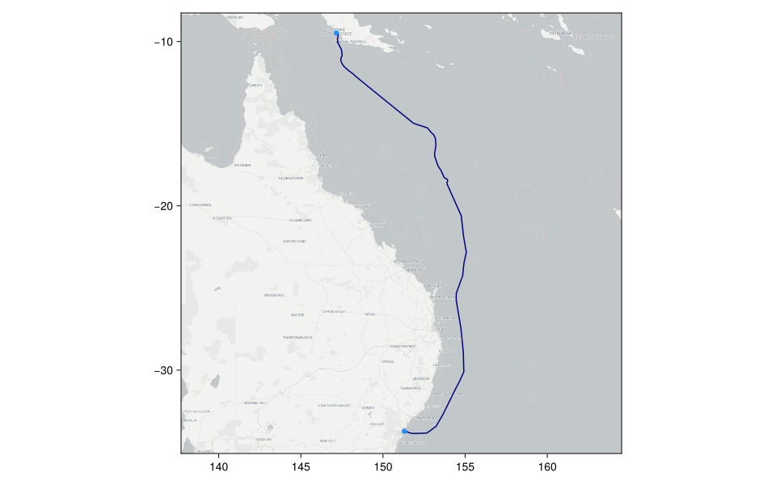
Australia Singapore Cable
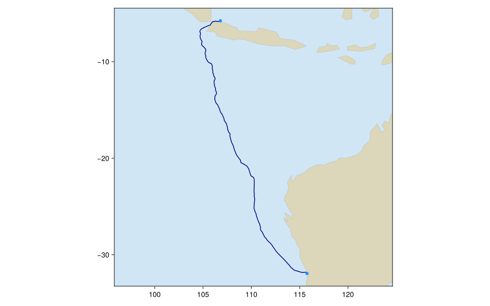
Australian Japan Cable - Northern Branch
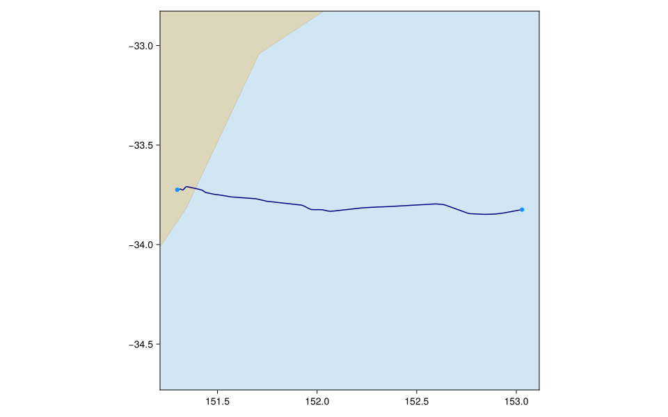
Australian Japan Cable - Southern Branch
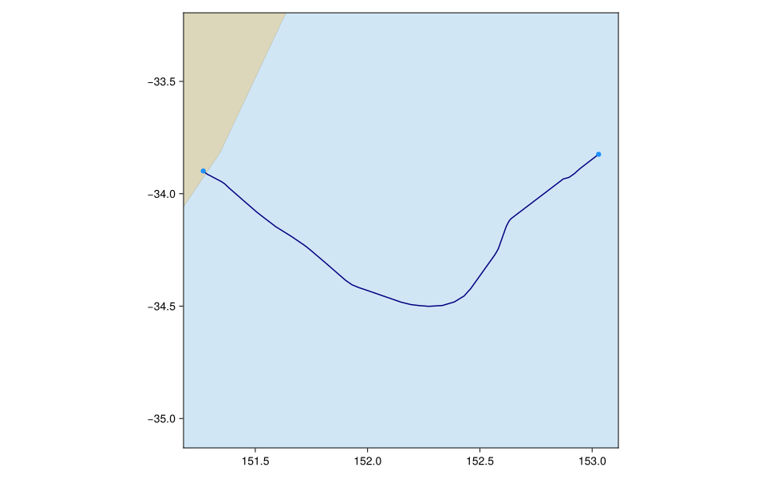
Coral Sea Cable
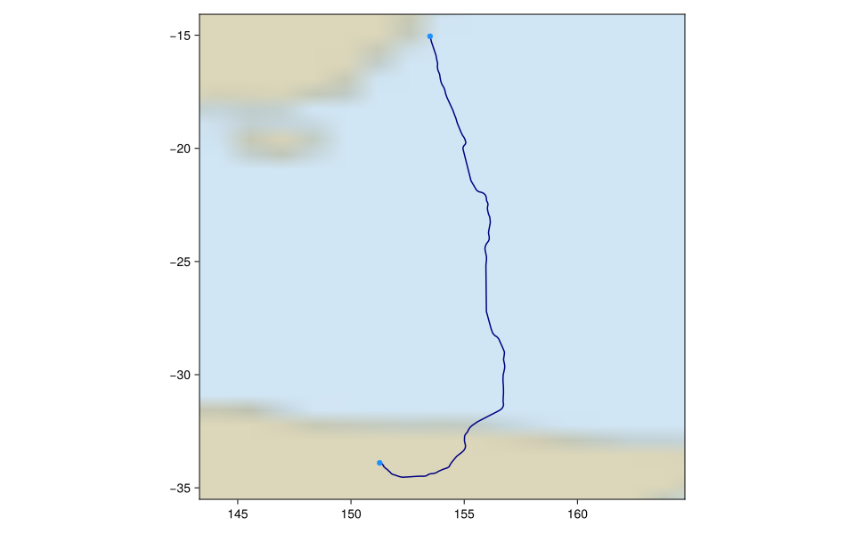
Gondwana Cable
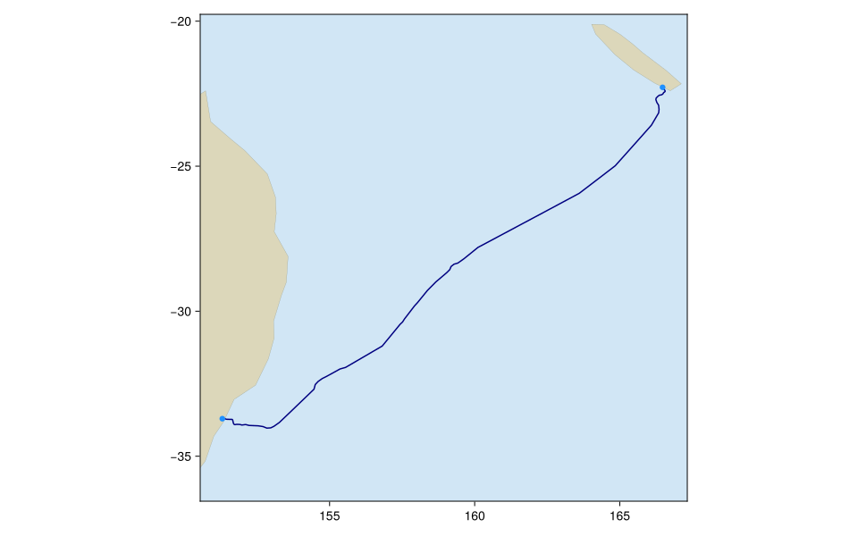
Hawaiki Cable
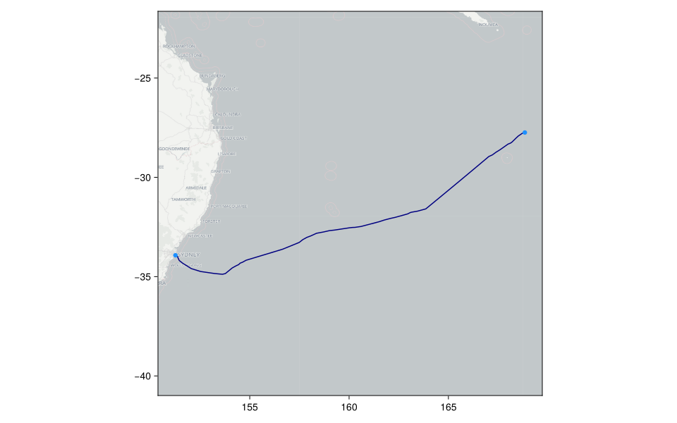
Indigo Central
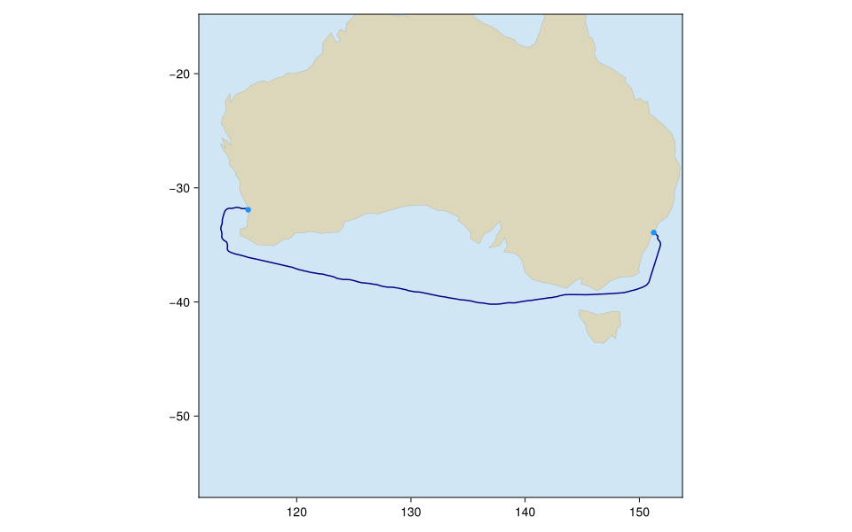
Indigo West
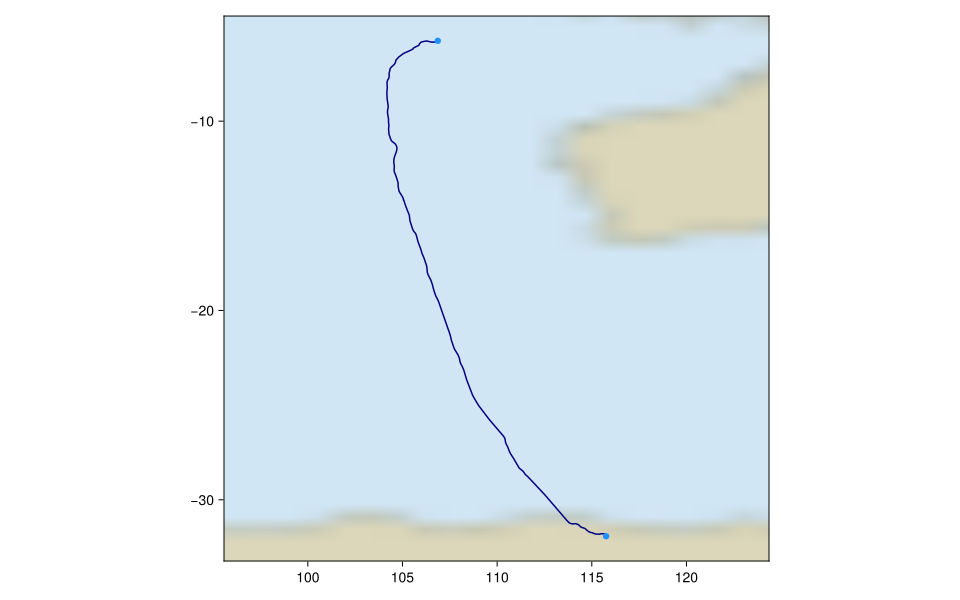
Japan-Guam-Australia Cable
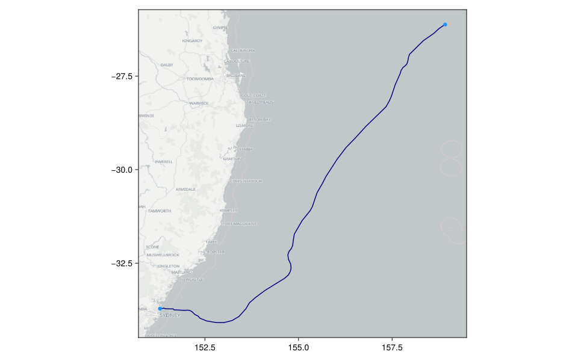
Pipe Pacific Cable
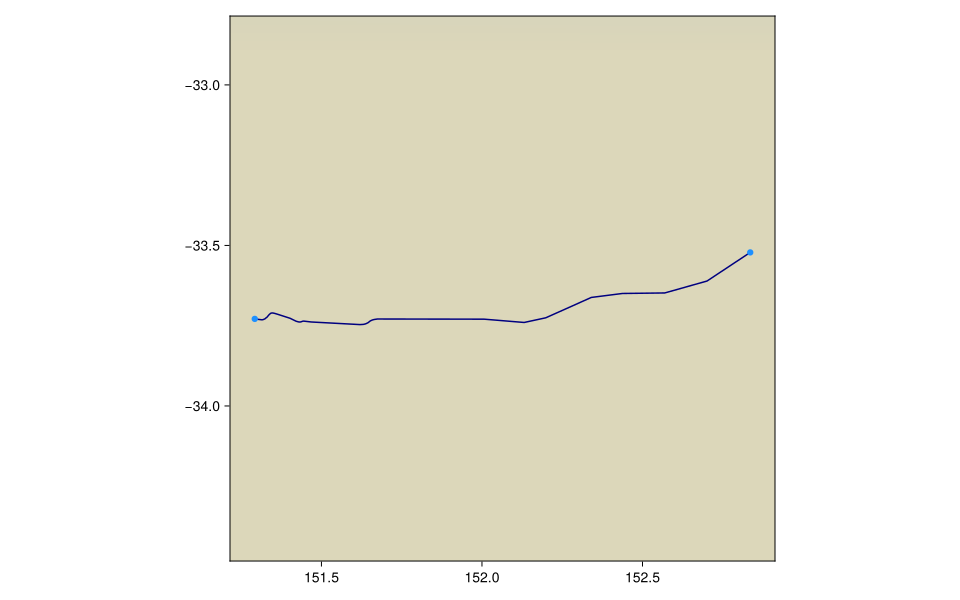
SEA-ME-WE-3
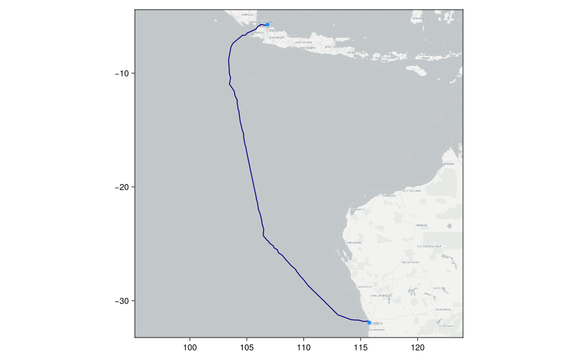
Southern Cross Cable - North
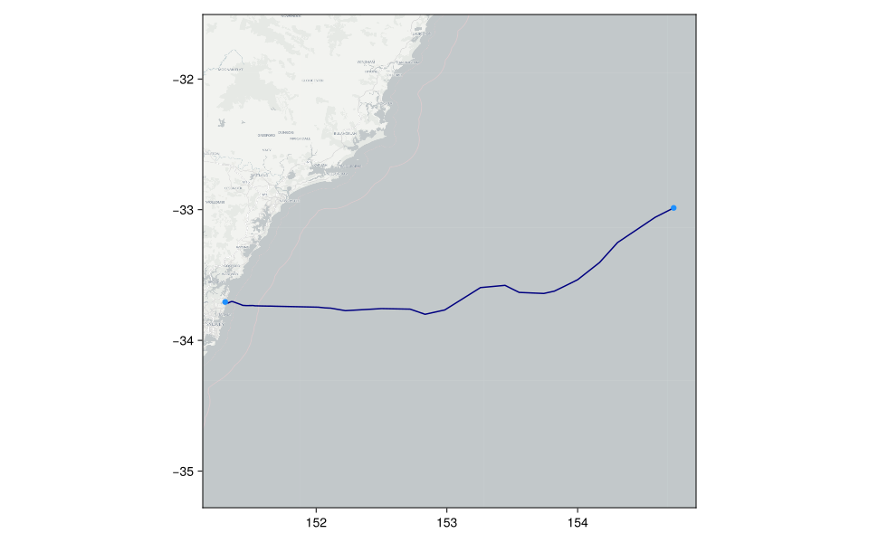
Southern Cross Cable - South
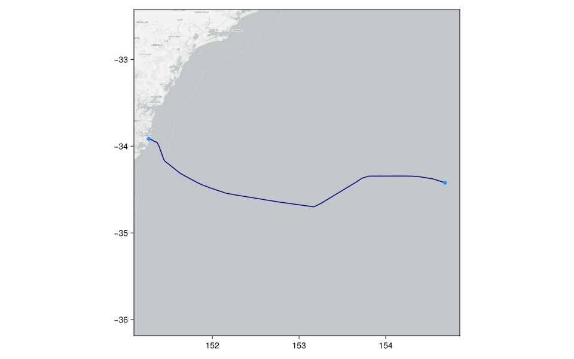
Tasman Global Access
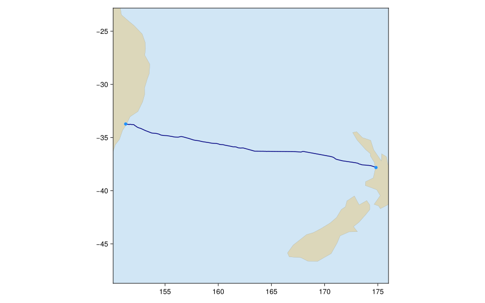
Telstra Endeavour
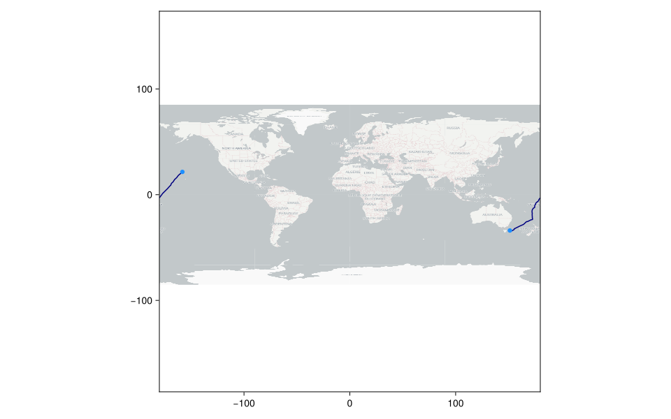